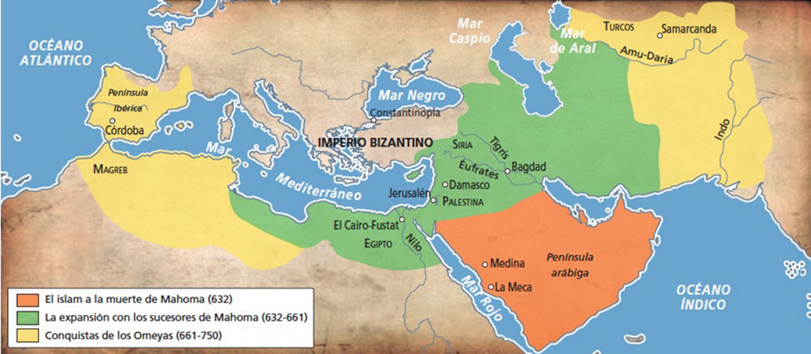
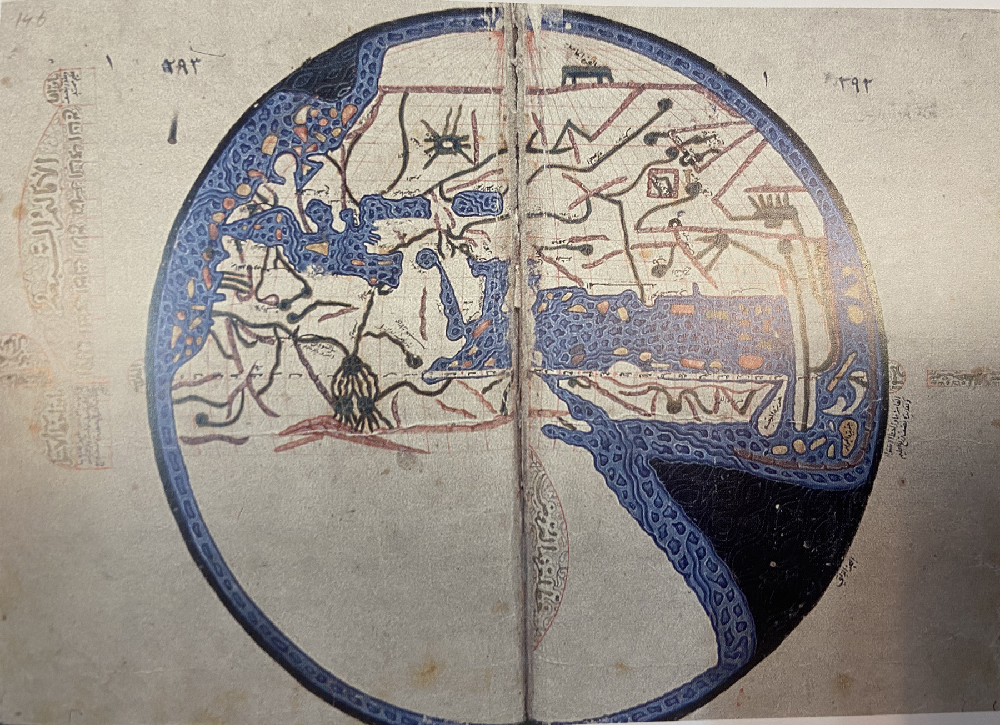
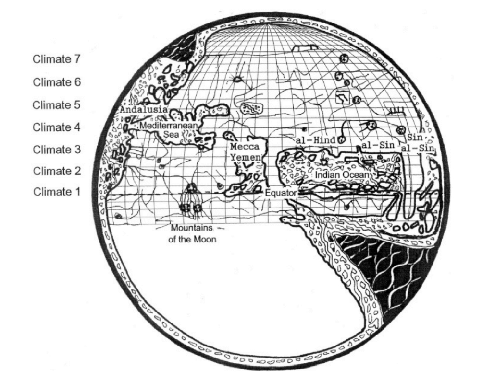

HISTORIA DE LA CARTOGRAFÍA
La Oikumene
La Cartografía en la Edad Media
EDADMEDIA-CLASE - 30 de septiembre de 2019
Templating -> https://www.chenhuijing.com/slides/56-imagecon-2019/#/13
https://www.chenhuijing.com/about/
Alineación de tres imágenes

Alineación de tres imágenes. destacando el centro
Comparación imágenes

Reference: Finally understanding JPG
Comparación imágenes matriz 4x4
Reference: Finally understanding JPG
Comparación imágenes matriz 3x2
Reference: Finally understanding JPG
Secuencia de 5 imágenes con doble caption

(2 colours)
(4 colours)
(16 colours)
(256 colours)
(16,777,216 colours)
Source: Wikipedia, Color depth
Mapas isidorianos


Mapas isidorianos - Mapas de V-

BnF, MS lat. 4915, fol. 26v, 1447–1455
Mapas isidorianos - Mapas de Y-O

Macon, Bibliotheque Municipale, MS 2, fol. 19r
Alineación de imágenes


Reference: Reducing PNG file Size
Título Orden 2 🙏

Lista de características
- Davis, W. (1986). The Origins of Image Making. Current Anthropology, 27(3), 193-215. doi:10.1086/203422
- The GIF Is Dead. Long Live the GIF.
- Types of Bitmaps
- Why do we need JPG compression and how it's technically working? by Steven Hansen
- Progressive JPEGs and green Martians by Jon Sneyers
- Finally understanding JPG by Christoph Erdmann
- How JPG Works, How PNG Works, Reducing PNG file Size by Colt McAnlis
- Thoughts on a GIF-replacement file format
- Quantum Up Close: What is a browser engine? by Matt "Potch" Claypotch
- Let's build a browser engine! by Matt Brubeck
- On rendering engines and graphic libraries by Kilian Valkhof
- Following up on the 2d graphics in Rust discussion by Nicolas Silva
- Introduction to WebRender – Part 1 – Browsers today by Nicolas Silva
- The whole web at maximum FPS: How WebRender gets rid of jank by Lin Clark
- Software vs. GPU rasterization in Chromium* by Martina Kollarova
- GPU Accelerated Compositing in Chrome by Tom Wiltzius, Vangelis Kokkevis & the Chrome Graphics team
Inserción videos
Características del Islam
One
Two
Three
Four
CARTOGRAFÍA ISLÁMICA
- Contexto histórico.
- La escuela bagdasí de Al Bakhi.
- Los mapas KMMS
- Al Idrisi y Roger II de Sicilia.
Cronología mundo islámico
- 570-632: Vida de Mahoma.
- 632-661: Primeros califas 👉 Expansión Oriente Medio y Egipto.
- 638: Toma de Jerusalen.
- 661: Asesinato de Alí. Comienza el chiísmo.
- 661-750: Califato de los Omeyas. Capital Damasco.
- 711: Desembarco en la península ibérica.
- 732: Batalla de Poitiers. Carlos Martel.
- 756-1031: Al Andalus - Córdoba.
- 756: Abderramán proclama emirato independiente.
- 929–1031: Califato de Córdoba.

- 750-1258: Califato de los Abasíes. Suní. Capital Bagdad.
- 997: Mahmūd, primer sultán. Imperio gaznávida (Afganistán).
- 1037: muerte del pensador Ibn Sina (Avicena). Sultanato Selyúcida.
- 1077-1299: Sultanato del Rüm, hoy Turquía. Origen turcomongol.
- 1198: muerte del filósofo Ibn Rouchd (Averroes).
- 1258: destrucción de Bagdad por los mongoles.
- 909–1171: Califato fatimí. Chií. Capital Cairuán (Túnez) y El Cairo.
- 1171-1250: Salah-Al-Din lo derrota 👉 Dinastía ayubí (kurdos).
- 1250–1517: Sultanato mameluco de Egipto.
- Heredero de la Dinastía ayubí
- Califas sometidos a los sultanes.
- 1290-1923: Imperio turco otomano
- Imperio multiétnico. Turcos del Sultanato del Rüm.
- 1453: Caída de Constantinopla.
- 1517: Selim I, sultán se proclama califa 👉 Califato otomano.
Edad de Oro del Islam
- Islam 👉 Concepción holística de Dios, humanidad y naturaleza (ciencia).
- Énfasis el valor del conocimiento. Mahoma dice:
- ⏳ Siglo VIII - Siglo XIII - Dinastía Abasí. Bagdad 🕌
- Bagdad 🧞 👉 Casa de la sabiduría 👉 Biblioteca y Centro de traducciones.
- Libertad religiosa 🕌⛪🕍: atrae a intelectuales judíos y cristianos.
- Intercambio con el Imperio Bizantino, heredero de Roma.
- Centros intelectuales: El Cairo y Córdoba.
- Primeras bibliotecas públicas 🏛, universidades 🎓 y observatorios 🔭.
- Universidad más antigua del mundo: Fez, 859. El Cairo, 975.
- Bibliotecas: El Cairo 500 000 📚. Trípoli, 3 000 000 📚.
- Córdoba: más de 70 bibliotecas públicas.
- Tecnologías: Mejoran el papel chino. Pluma sobre pincel.
La tinta de los científicos vale tanto como la sangre de los mártires.
- Textos clasicos griegos de Egipto y Bizancio 👉 Traducción al árabe. Unifica.
- Matemáticas: numeración arábiga 👉 El Álgebra.
- Ibn al-Hayzam desarrolla los primeros métodos científicos. Enfoque empírico.
- Ibn Sina (Avicena) en medicina y Al-Biruni (astrolabio y el sistema decimal).
- Traducción al árabe del Almagesto de Ptolomeo.
- Se extiende el uso del astrolabio y la brújula.
El astrolabio
- El miḥrâb de la mezquita se orienta según la Qibla o dirección hacia La Meca 🕋.
- Matemático Muhammad al-Fazari (fl.790-806), primer astrolabio.
- Tablas de ortos (amanecer) 🌄 y ocasos 🌇 de multitud de estrellas para las horas del salat 🙏 (rezo).
- Abd al-Rahman al-Sufi 📘 los 1000 usos de un astrolabio.
La brújula 🧭
- 1232: primera referencia a una brujula en un viaje por el Mar Rojo y el golfo Pérsico. Artefacto de origen chino.
- 1242: Baylak al-Qibjāqī describe el uso de agujas imantadas en un viaje de Siria a Alejandría.
- Siglo XIV: Ibn al-Shatir inventa la ṣandūq al‐yawāqīt (caja mágica), encerrando la aguja imantada en una caja con un dial con subdivisiones. Se empieza a utilizar la rosa de los vientos con 32 rumbos.
- Siglo XV: Ahmad ibn Mājid describe los principios básicos de navegación con brújula, incluyendo el concepto de declinación magnética.
Cartografía islámica
- ¿De qué estamos hablando? ¿Imagen, representación, esquema...?
- Influencias de oriente y occidente.
- Bizancio 👉 Ptolomeo (Nomenclátor). Menos influencia que en el Renacimiento
- China 👉 Materiales. Brújula.
- India 👉 Cúpula de la Tierra. Establecimiento de un meridiano.
- Persia 👉 División del mundoLa división en climas griega καιρός (Kairós) 👉 iqlīm, en plural aqālīm
- Necesidad de división del territorio: estudio, recaudación de impuestos.
- Definición de unidades de medida
- Dhirā (codo) (0.6 metros). Mīl (milla) (3000 dhirā). El farsakh (3 mīl o 5.5 Km).
- Un día de viaje era un marhalah. Una etapa de viaje, manzil.
- La navegación de un día es un majrā. Tres horas de navegación es un zām.
- Latitudes y longitudes se miden en grados, minutos, darajahs y daqīqahs.
- Cartografía poco estudiada
- No han sobrevivido grandes mapas.
- 1840: Jaubert traduce geografía de al-Idrisi.
- 1920: Konrad Miller publica Mappae arabicae.
- Clasificación de Johannes Hendrik Kramer.
Características
Técnicas y Materiales

Primeras representaciones
El mapa del Califa al-Ma’mun. 813-833


Manuscrito de Ibn Fadlallah al-‘Umari, (fl.1301-1349). Topkapi Sarayi Müzesi, Istanbul A.2797, fols. 292v-293r. Diámetro 20 cm.
Escuela de geografía de al-Balkhi
Abu Zayd Ahmed ibn Sahl Balkhi
- 👳 Abu Zayd Ahmed ibn Sahl al-Balkhi.
- ⏳ Geógrafo persa nacido en Balkhi, 879 - 934.
- Escuela Balkhi en Bagdad.
- Kitāb al-Masālik wa-al Mamālik 📕.
- Interés geográfico en el mundo musulmán.
- Pocos mapas han llegado del propio al-Balkhi.
- al-Istakhri
- al-Muqaddasī
- Ibn Hawqal
- Atlas del Islam ó Mapas KMMS
Kitāb al-Masālik wa-al Mamālik. Mapamundi.
- Mide 35.5 x 48 cm. Tinta y oro sobre papel.
- Escuela Balkhi en Bagdad.
- Kitāb al-Masālik wa-al Mamālik 📕.
- Interés geográfico en el mundo musulmán.
- Pocos mapas han llegado del propio al-Balkhi.
- al-Istakhri
- al-Muqaddasī
- Ibn Hawqal
- Atlas del Islam ó Mapas KMMS
al-Istakhri
- 👳 Abu Ishaq Ibrahim ibn Muhammad al-Fārisī al-Istakhrī
- ⏳ Istakhr - Baghdad, ca.952
- Viajero y geógrafo
- Miembro de la Escuela Balkhi
Kitāb al-masālik wa-'l-mamālik (KMMS)
Ibn Ḥawqal
- 👳 Muḥammad Abū’l-Qāsim Ibn Ḥawqal.
- ⏳ Nisibis, 🇹 , 943 -988
- Geógrafo, escritor.
- Miembro de la Escuela Balkhi.
Kitāb Ṣūrat al-’Arḍ (La Faz de la Tierra)

al-Idrīsī
- 👳 Abū Abd Allāh Muhammad al-Idrīsī.
- ⏳ Ceuta, 1110 - Sicilia, ca.1165 ó 1175.
- Viajero, cartógrafo y geógrafo.
- Miembro de la Escuela Balkhi
Book of Curiosities
- 👳 Abu Ishaq Ibrahim ibn Muhammad al-Fārisī al-Istakhrī
- ⏳ Istakhr - Baghdad, ca.952
- Viajero y geógrafo
- Miembro de la Escuela Balkhi
Gracias por su atención
Turno de preguntas